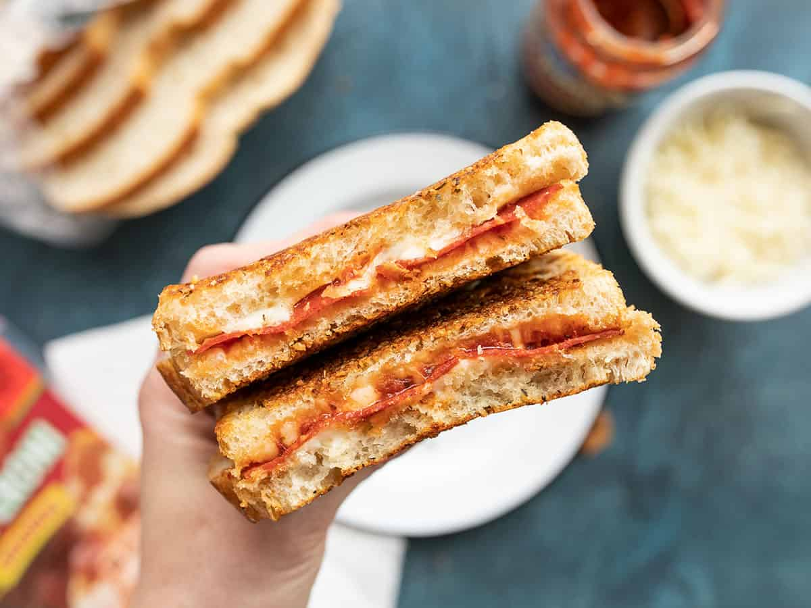

Doritos

I stole this from Budget Bytes
Ingredients
- 1 Tbsp butter, room temp
- 1 Tbsp grated Parmesan
- 1/2 tsp Italian seasoning
- 2 slices hearty bread
- 1/3 cup shredded mozzarella
- 1 Tbsp pizza sauce
- 6 slices pepperoni
Steps
- Stir together the room temperature butter, grated parmesan, and Italian seasoning in a small bowl until evenly combined. Spread the Parmesan butter over one side of each slice of bread.
- Flip the bread over so the un-buttered side is facing up. Place half of the shredded mozzarella on one slice of bread. Next, add small dollops of the sauce over top of the cheese, followed by the sliced pepperoni. Finally, add the remaining cheese. Place the second slice of bread on top to close the sandwich, butter side facing out.
- Place the sandwich in a skillet and cook over medium-low heat until golden brown on each side and the cheese is melted on the inside. Cut the sandwich in half and serve!